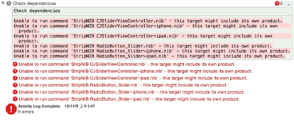

title: CocoaPods库部署
date: 2014-12-24 14:25:36
categories:
[toc]
pod search如果你在终端执行pod search xxx，未得到上面的结果，是因为cocoaPods的本地search_index.json文件有问题，
方法①：请前往~/Library/Caches/CocoaPods/search_index.json将该文件删除，
方法②：或者直接在终端输入：rm ~/Library/Caches/CocoaPods/search_index.json，
删除后，再重新执行命令即可。
验证方法1：
pod lib lint CQBaseUIKit.podspec --sources='https://github.com/CocoaPods/Specs.git,https://gitee.com/dvlproad/dvlproadSpecs' --allow-warnings --use-libraries --verbose
验证方法2：
pod lib lint CQBaseUIKit.podspec --sources=master,dvlproad --allow-warnings --use-libraries --verbose
提交方法：
pod repo push dvlproad CQBaseUIKit.podspec --sources=master,dvlproad --allow-warnings --use-libraries --verbose
不需要过多验证的话，简洁版：
pod repo push dvlproad CQThemeUIKit.podspec --allow-warnings
CocoaPods创建公有Pod库后删除特定版本来纠正意外推送
可以删除一个POD的特定版本来纠正意外推送。
pod trunk delete PODNAME VERSION
你也可以放弃整个POD和所有版本。
pod trunk deprecate PODNAME
确认时，请回复一个”y”(小写字母 y)
库目录
~/.cocoapods/repos/dvlproad
Podspec编辑方法：
首先确认编辑环境，podspec的引号”是否正确
如果Podspec有依赖的系统库，则添加方法如下：
s.libraries = "sqlite3"
如果Podspec有依赖的第三方库，则添加方法如下：
s.dependency 'FMDB', '~> 2.5'
如果Podspec有依赖的资源，则添加方法如下：
s.resources = "CJSliderViewController/**/*.png"

解答：参考Cocoapod compilation fails when loading .xib file
即错误原因为：把非.h.m的文件都放到resouces中，而不要放到soucres中